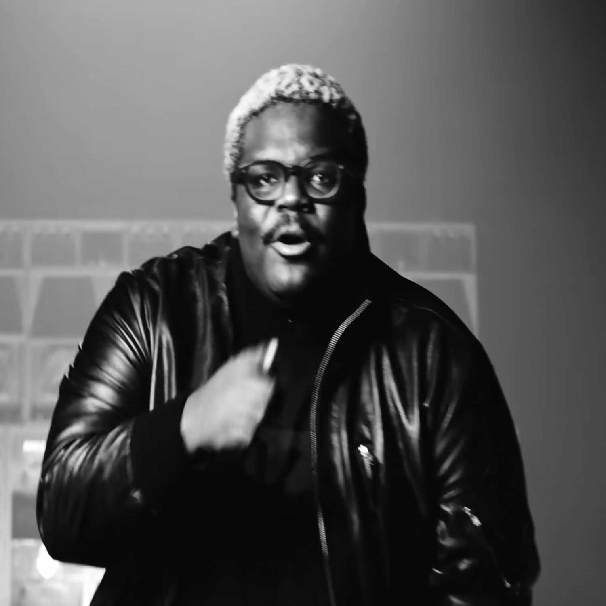
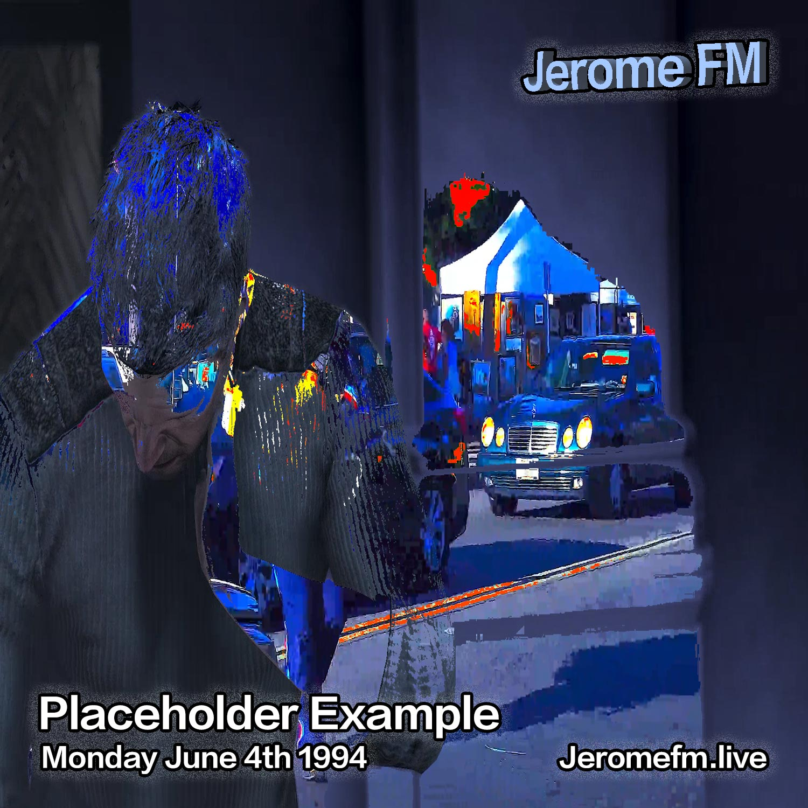

June 21, 2026 • DJ ME
Song of the Summer???
I'm suprised It didn't make the World Cup Album

June 14th, 1997 • By Jerome FM Staff
Resident Spotlight: Placeholder Resident
This is an example of a editorial so we have a back up just in case we screw up.